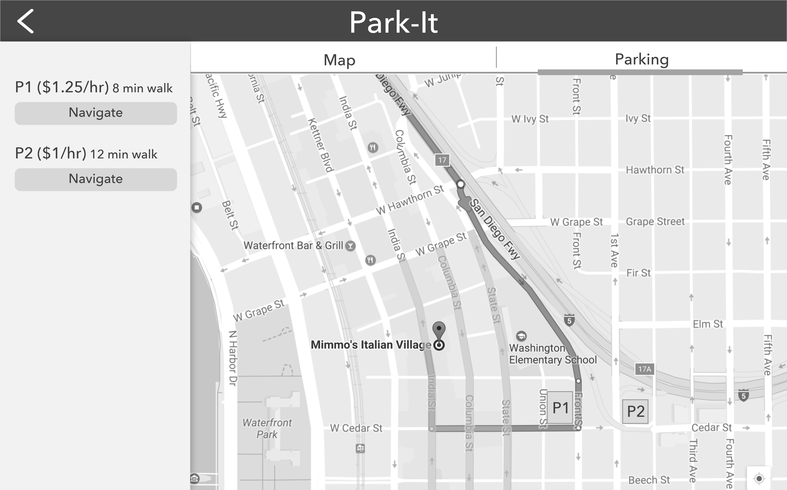
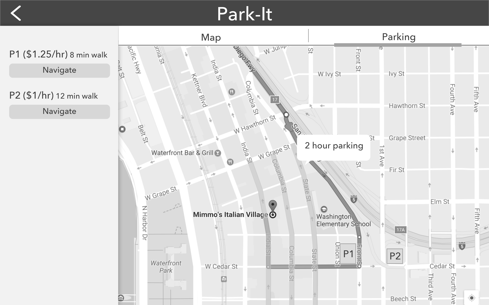
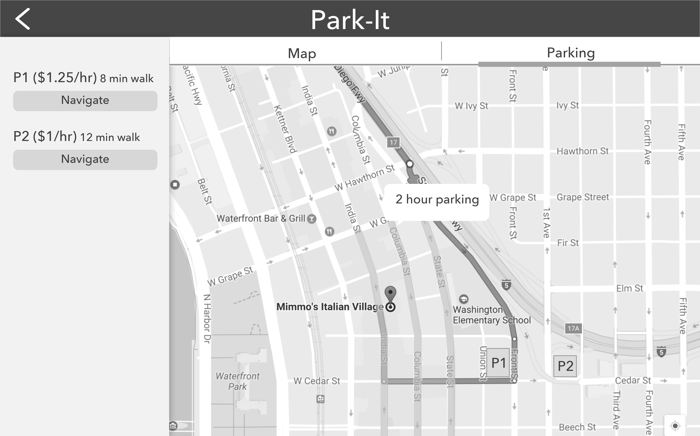
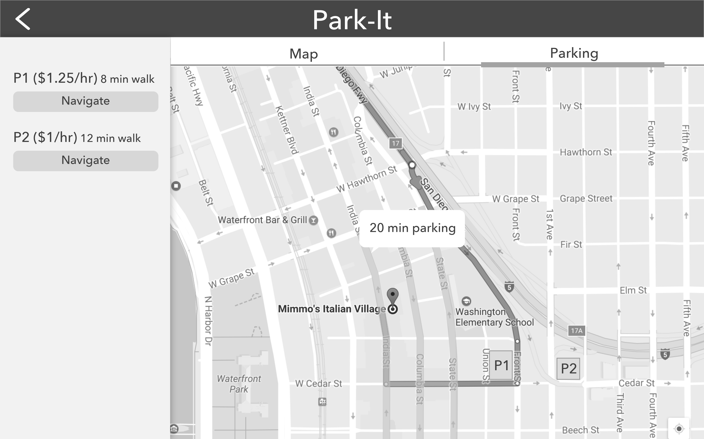
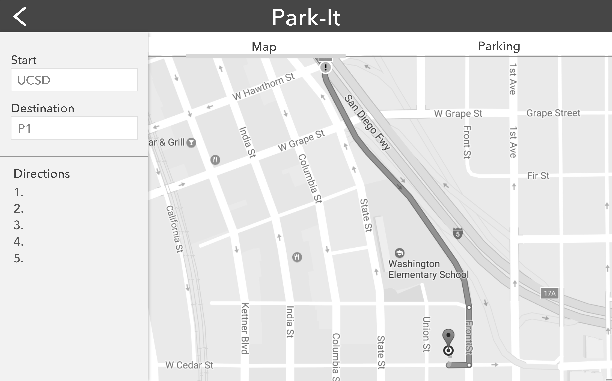
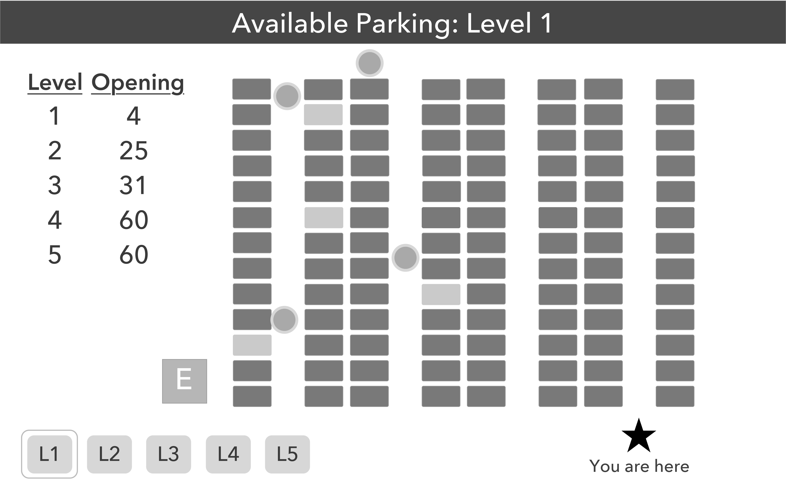
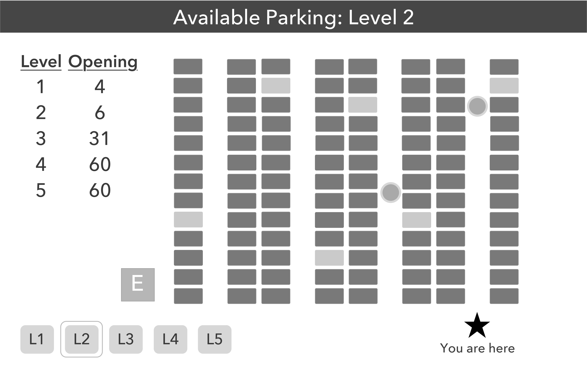

Persona: Victoria is a 4th year student at UCSD. She occasionally takes trips to downtown LA or SD and often has trouble finding parking. Usually she inputs the address of the destination on her GPS but has to find parking near there on her own. Sometimes the lots are closed or full. She wants a way to access information about parking spots around her destination and the availabilities in parking structures so she can go there directly without wasting time.
Video:
PDF:








